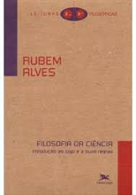
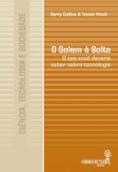

Nesta página estão disponíveis os livros de Ciências Sociais Aplicadas! Afinal, Engenharia não é apenas cálculo...
-

Filosofia da Ciência. Introdução ao jogo e as suas regras
Filosofia da ciência - introdução ao jogo e suas regras foi escrito para acabar com o mito de que o cientista pensa melhor que os outros. Este é um mito perigoso, que inibe o pensamento e induz comportamentos, dando ao comum dos mortais a impressão de os cientistas pensarão por todos.
-

O Golem: Tudo que você queria deveria saber sobre Ciência
"O Golem" apresenta uma visão da ciência como algo falível e um tanto desordenada, mais uma questão de ofício do que de lógica. Para tanto, a obra examina vários experimentos, alguns famosos, como as provas da teoria da relatividade, outros nem tanto.
-

Usability Testing Essentials promove aos leitores as ferramentas e técnicas necessárias para começar se começar a testar a usabilidade e para que o leitor aprofunde seu conhecimento na área.
-

O projeto ou design da experiência do usuário é a disciplina da criação de um Website ou aplicação útil – uma que é facilmente se ser navegada e que atende as necessidades do proprietário do site e de seus usuários. E aí onde entra este livro.